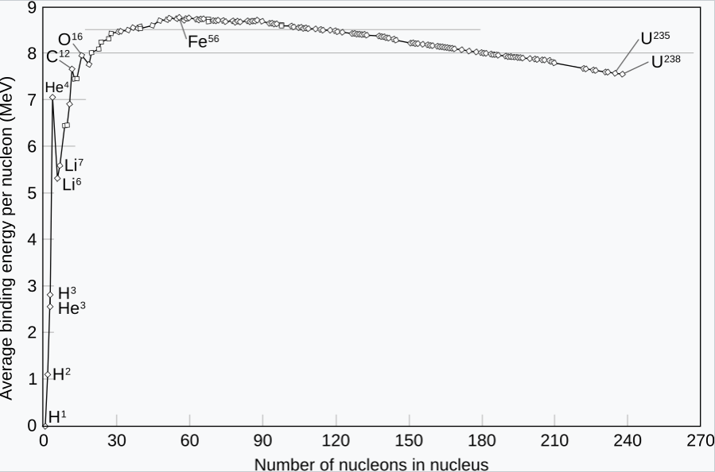

Semiconductors
How has this material changed our modern world?
SemiconductorsThe future of energy?
Each time we turn and face the sky to feel the pleasant rays of sunlight warming our face, it can feel weird to remember where this relaxing sensation comes from. It is the result of an immensely powerful release of energy from a star over 100 times the size of our entire planet which has made its way through millions of kilometres of space to reach us. Our sun, like all stars in the universe, are fuelled to burn for billions of years by the phenomenal release of energy upon the combination of atomic nuclei known as fusion. It can be hard to imagine that this chaotic creation of energy could ever be harnessed on earth to power our cities; and yet we are attempting exactly that. This article looks to describe the essential fusion mechanism and apply it to examples of real-world fusion reactors like Tokamaks and inertial confinement facilities.
At its core, fusion is the joining together of atomic nuclei to create one larger nucleus. This process can either release or absorb energy depending on the change in nuclear binding energy per nucleon during fusion. Nuclear binding energy is the energy required to disassemble a nucleus into the free, unbound nucleons (neutrons and protons) it is composed of. The higher the average binding energy per nucleon, the more energy is required to separate it and so it is more stable. Increasing this energy consequently results in a release in energy as the nucleus has reached a more stable state. This release of energy is what makes the fusion reaction so important. It also presents itself in the mass defect of a fusion reaction where the amount of energy loss is proportional to the amount of mass lost by the speed of light squared.
The value of the nuclear binding energy itself is determined by the balancing of two factors within the nucleus, the first being the strong nuclear force. It is a complex quantum interaction that binds nucleons together through an incredibly strong force, however, it is very short range and so becomes negligible for any interaction other than that between neighbouring nucleons. As more nucleons are added, this force becomes more effective as each nucleon is surrounded very closely by more nucleons so the energy of the system decreases. However, it is not always energetically favourable to add more nucleons to the nucleus due to the electrostatic repulsion forces between the protons. This force is weaker by a significant amount when compared to the strong nuclear force however it acts over a much longer range. The result is that in larger nuclei, increasing the number of nucleons is less energetically favourable as the repulsive forces between distant protons outweighs the strong nuclear forces of attraction. This relationship is seen in a graph showing the trend in nuclear binding energy per nucleon. Keep in mind that a larger nuclear binding energy per nucleon means that more energy must be put into the nucleus per nucleon to disassemble it meaning that it must be in a lower energy state.
It happens to be that Ni-62 has the perfect balance of strong nuclear force and nuclear radius to make it the most stable nucleus. For atoms with smaller nuclei, the average binding energy increases as more nucleons are added so energy is released in this way. As nucleon number continues to increase average binding energy per nucleon begins to decreases which requires an input of energy. On this side of the graph, it is the reverse fission process that yields a release of energy. As we can see by the gradient of this graph, fusion yields a much greater release of energy than fission does.
The enormous release of energy from the combination of a few tiny particles seems to be an incredibly efficient source of power that could fuel our planet’s growing hunger for power with ease. To achieve fusion on Earth we encounter one small problem, how can we recreate the extreme conditions at the centre of a star. It is the immensely high pressure and temperature at the centre of the star which creates an environment that allows fusion to occur. The enormous mass of the sun means that it is almost impossible to consistently maintain similar pressures on our planet so we compensate for this by using a much higher temperature to initiate fusion. Currently there are two very promising methods of fusion that are both seeing results and receiving a large amount of funding that we will look at in this article.
When heating any fuel to temperatures hotter than the core of the sun it becomes a “fourth state of matter” called plasma. This is described as a “soup” of positively charged particles and electrons which have been separated from each other. The soup of incredibly hot particles is unsurprisingly very hard to contain and moves around at great speeds, disintegrating anything it comes into contact with which isn’t very practical for building reactors around. The solution tokamaks offer is a toroidal (donut-shaped) vacuum chamber controlled by a powerful magnetic field created by coils of superconducting magnets. These magnets confine the plasma fuel into a whirling ring so that the nuclear reaction can occur in a more controlled manner.
-The plasma chamber of the TCV tokamak in Switzerland
The charged plasma tends to follow field lines as if the particles move perpendicular to the field lines they move in a circle around it (Force perpendicular to direction of motion) however they experience no force when moving parallel to the field lines so overall they travel around the torus in a helical path. Field lines around the torus are produced by superconducting electromagnets wrapped around the torus. The issue with this is the difference in magnetic field strength as in the centre of the torus field lines are closer together and so the magnetic field is stronger than the outside of the torus. Plasma particles are affected by the field in non-uniform ways which results in instability so the plasma ring does not last long enough for fusion to occur. To keep the plasma in a stable shape, a current is passed through the middle of it which creates circular magnetic field lines around the torus. These two magnetic fields combine to create twisted magnetic field lines around the torus to look like a candy cane which mean that each particle experience the inner strong field and outer weak field. The ratio of twists to orbits is known as the safety factor and the higher it is, the longer the fusion reactor can be run for.
Not every instability in the plasma is solved by tokamaks, for example, “banana orbits”. These are a result of the wide range of particle energies in a tokamak. Lower-energy particles in the fuel reflect off the stronger magnetic field at the inner edge of the torus, sending them backwards through the fuel. They then collide with the higher energy nuclei and scatter them out of the plasma causing fuel to be lost from the reactor. This process is slow enough for practical reactors to be attainable. Other instabilities require innovative new solutions such as implementing AI algorithms to detect when the plasma is reaching a critically unstable state and to cool down or entirely shut off the machine to avoid major damage.
An astonishing fact about tokamaks is that they contain the greatest temperature gradient in the known universe with the cooled superconducting magnets at –193°C being just metres away from the 150 million °C plasma (10x hotter than the centre of the sun!).
This plasma is initially created by running a high-intensity electrical current through the deuterium gas which strips the atoms of their electrons, resulting in a plasma. The fuel is then brought up to fusion temperatures via various methods including:
JT-60SA is currently (as of late 2023) the largest superconducting tokamak in the world. It is Japan and Europe’s joint international fusion experiment which has successfully produced plasma rings of up to \(135m^3\). This project’s successes have paved the way and influenced the construction of an even larger project in France, ITER which will boast an impressive \(850m^3\) of space to fill with plasma fuel. It will use a fuel combination of two isotopes of hydrogen: deuterium harvested from salt water and tritium which can be found in the atmosphere.
-ITER under construction
The other major field of research in fusion power generation is Inertial Confinement. Instead of creating a ring of plasma and going through the great effort of controlling it, Inertial confinement fusion compresses and heats small targets filled with fuel. The fuel for these powerful reactions are just small pellets typically containing deuterium and tritium. If we target a very high energy at the pellets they can be compressed and heated sufficiently for fusion to occur.
The energy and compression is achieved by focusing an array of intense laser beam onto the small pellet (1-10mm diameter). Pulses of the lasers are organised so that the shocks produced during the implosion converge in the centre of the pellet, heating the core to fusion temperatures. The burn initiates in the central D-T layer and spreads outward as the alpha particles collide with and heat the rest of the pellet to a value sufficient to produce fusion reactions. Ignition occurs, and the pellet, now a dense plasma, is burned up in a small micro explosion while fusion occurs, releasing large amounts of energy; Ideally more than is put in. Implosion speed is several hundred km/s.
The NIF (National Ignition Facility) in the US, uses neodymium-doped phosphate glass slabs. In the slabs, neodymium atoms are raised to higher energy states by intense white light which surrounds them. When the laser pulse passes through the glass slabs, the extra energy of the phosphate atoms is transferred to the laser beam. The initial weak laser pulse starts at just a billionth of a joule and can reach up to 4 million joules in a few millionths of a second.

-NIF target chamber
The Future of Fusion: To date the NIF is the only fusion facility that has produced a net energy gain. Even this success is somewhat debated as the input energy they use to calculate the gain doesn’t include all of the energy inputs. Advances are constantly being made in the field with the goal of supplying essentially unlimited clean energy for the entire globe. Achieving this goal would benefit the entire world to an incredible extent as it would continue to supply the ever-growing demand for energy while lessening our impact on the planet by providing a clean energy source with very little waste. The eternal joke in fusion energy science is that a functional reactor is just 20 years away, repeating every 20 years. However, the new ITER tokamak project appears to be very promising with some of the brightest scientists contributing to its research so we may be seeing many more successful results in the near future.ITER. “ITER - the Way to New Energy.” ITER, 2019, www.iter.org/.
JT-60SA. www.jt60sa.org/wp/.
“Lasers, Photonics, and Fusion Science: Science and Technology on a Mission.” Llnl.gov, 2018, lasers.llnl.gov/.
Matter, Improbable. “How Nuclear Fusion Works (3) - Magnetic Confinement, Tokamaks, Stellarators.” YouTube, 11 July 2022, www.youtube.com/watch?v=gwOrbr8KWDs.
“MIT Plasma Science and Fusion Center (PSFC).” Mit.edu, 2021, www.psfc.mit.edu/.
“Nuclear Fusion Energy: The Energy of the Stars.” Fusion for Energy, fusionforenergy.europa.eu/what-is-fusion/.
The Royal Institution. “The Latest Developments in Fusion Energy - with the UKAEA.” YouTube, 16 Apr. 2024, www.youtube.com/watch?v=jI5K7PCiW3Y.
Wikipedia Contributors. “Tokamak.” Wikipedia, Wikimedia Foundation, 17 Oct. 2019, en.wikipedia.org/wiki/Tokamak.
World Nuclear Association. “Nuclear Fusion Power - World Nuclear Association.” World-Nuclear.org, 22 Dec. 2022, world-nuclear.org/information-library/current-and-future-generation/nuclear-fusion-power.
How has this material changed our modern world?
Semiconductors
How do electrons really behave in atoms?
Atomic Orbitals